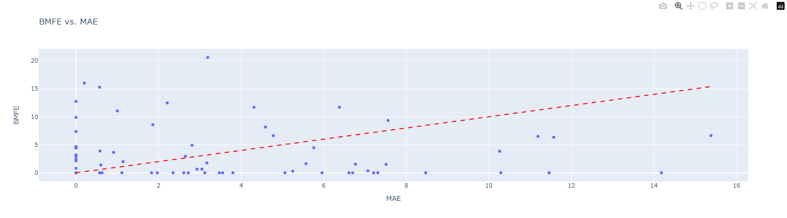
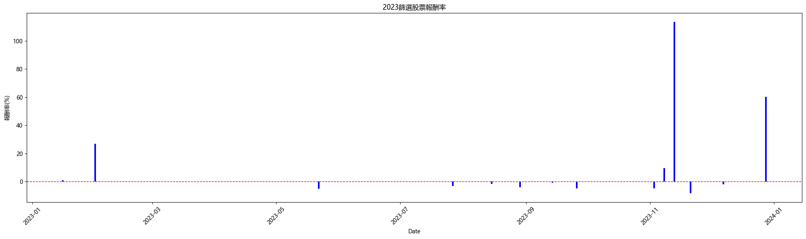

短期RS大躍進選股策略

(一)甚麼是RS
RS全名是相對強度（Relative Strength），是超級績效作者Mark Minervini觀察的指標，根據他的說法「我絕大多數的績效來自於 RS 90 以上的股票，買進的股票 RS 最低不能小於 70」。他希望買進的股票RS Ranking(過去52週表現)不低於70，意思就是說過去52周內，這支股票要比全市場的70%股票表現都要來的好。 RS的數字從0-100，有點像是考學測的PR值一樣，不一定你分數高就一定PR值高，也不一定考很爛就一定不好，還是要看大盤所有股票的表現。
RS指標參考網址
(二) 策略發想
有許多策略探討盤整後第一根紅K突破，但實際回測發現這樣其實有許多假突破的可能，或是後繼無力，這時候比較尷尬的就是要繼續等待還是離開。因此本策略改變想法，找60RS(60日的RS排名)，以及240RS要維持在高檔，但是近期(20RS排名)從低點瞬間拉升。意思就是這支股票還是強勢股，只是最近回檔休息，休息完後再次發動，期待發動的勝率與爆發率較大。
(三) 回測結果
- RS條件一 20日的RS RANK從小於15急拉大於52
- RS條件二 60日的RS RANK大於90
- RS條件三 240日的RS RANK大於90
- 其他條件 量不要太小，離前高不要太遠(跌太深壓力重重)等等
從2021年6月至2024年9月一共交易188筆，每檔的平均報酬率為5.50%，但由於此策略每檔持倉時間並不短，平均持有時間約12個交易日，且資金不夠每檔篩選出來的股票都買進，因此需進一步優化。
可以透過MAE個數繪圖找出停損點 藍色是最後賺錢的MAE直方圖，紅色是最後賠錢的直方圖，基本上MAE(最大跌幅)達到5%後就很難挽回頹勢了
觀察BMFE及MAE，尋找進場點，看看如果延後進場的效果會不會比較好
MAE相關解說參考FinLab撰寫的 MAE&MFE分析圖組使用指南
(四) 優化策略
1.設定停損點
- 20日的RS小於20(表現在全部股票中最後20%)
- 60日的RS小於80(表現跌破全部股票中前20%)
- 收盤跌破買進價的5%(根據MAE制定)
可以看到X軸的MAE收斂，一方面是減少虧損，一方面也是增加資金使用效率。畢竟機會成本下，一直持有一檔標的結果賠錢，還不如趕快會去下一隻有機會的股票。
同樣可以看到X軸的MAE收斂，然而儘管是設定5%停損，但因為策略是收盤才進行賣出而非盤中，所以還是可能造成而外的虧損，可能要透過盤中數據才能思考如何於盤中停損，目前數據皆來自證交所網站盤後資訊，未來若能取得盤中資訊可做進一步優化。 
2.天量見天價
從量價量價關係發現，篩選日量比20日平均少的，表現都更好。
如果篩選股票當天的成交量過大，後續成長就沒有這麼好。 可能可以理解成，如果當日成交量就大於20日平均成交量，代表今天的量已經比過去股價很熱的時候那段還要多人參與，可能就有點太過熱。
篩選日成交量大於等於20日平均的共有119筆，平均獲利1.49%，最大單一虧損的股票虧損15.22%
篩選日成交量小於20日平均的共有69筆，平均獲利12.44%，最大單一虧損的股票虧損13.63%
將表現較差的量比20日大檔數移除後可以明顯減少持倉檔數，增加資金使用效率。
3.囂張沒有落魄的久
篩選當天如果收盤已經漲9%以上，就不要追了，會讓自己成本墊高。 觀察篩選後隔天及後天，如果後兩天都有明顯的大漲(大於9%)，後續如果有轉弱就可以動態停利了。
- 篩選日當天表現及最後平均報酬率
| 上漲趴數 | 檔數 | 最後出場報酬率平均 |
|---|---|---|
| 0% | 22 | 12.04% |
| 1% | 17 | 8.76% |
| 2% | 12 | 9.06% |
| 3% | 9 | 9.41% |
| 4% | 6 | 10.61% |
| 5% | 6 | 9.48% |
| 6% | 5 | 10.55% |
| 7% | 3 | 10.03% |
| 8% | 2 | 6.56% |
| 9% | 1 | -4.87% |
- 篩選日隔天表現及最後平均報酬率
| 上漲趴數 | 檔數 | 最後出場報酬率平均 |
|---|---|---|
| 0% | 22 | 16.71% |
| 1% | 17 | 21.22% |
| 2% | 12 | 24.48% |
| 3% | 9 | 25.62% |
| 4% | 6 | 32.43% |
| 5% | 6 | 32.43% |
| 6% | 5 | 38.41% |
| 7% | 3 | 14.83% |
| 8% | 2 | -7.62% |
| 9% | 1 | -13.63% |
- 篩選日後第三天表現及最後平均報酬率
| 上漲趴數 | 檔數 | 最後出場報酬率平均 |
|---|---|---|
| 0% | 22 | 14.0% |
| 1% | 17 | 10.73% |
| 2% | 12 | 10.88% |
| 3% | 9 | 8.58% |
| 4% | 6 | 8.16% |
| 5% | 6 | 5.67% |
| 6% | 5 | 9.62% |
| 7% | 3 | -1.03% |
| 8% | 2 | 無數據 |
| 9% | 1 | 無數據 |
- 篩選日後天表現及最後平均報酬率
(五) 優化結果
優化後2021年2月至2024年9月共交易68筆，大幅下降，同時平均報酬率為12.82%。 考慮到資金控管，篩選出來的股票最多同時持有五檔，因此滿倉後無法再繼續買進新股票，會在少四檔，最後共交易64檔股票，篩選進來的股票每檔配置10萬，最多五檔(總部位達50萬)，的情況下年化報酬可達36.131%
| Annual return | 36.131% |
| Cumulative returns | 204.231% |
| Annual volatility | 29.184% |
| Sharpe ratio | 1.18 |
| Calmar ratio | 4.19 |
| Stability | 0.64 |
| Max drawdown | -8.62% |
| Omega ratio | 5.01 |
| Sortino ratio | 9.13 |
| Skew | 12.10 |
| Kurtosis | 161.73 |
| Tail ratio | NaN |
| Daily value at risk | -3.54 |

可以發現2022年空頭年沒有損失，但是2023年大多頭整年的表現非常不及格，而2023符合此策略的股票不多且幾乎都集中在11月後，導致2022至2023年Q3前此策略幾乎沒表現。 
-
賺賠比 勝32筆，賠36筆，勝率只有47%，但是勝的時候平均可以賺32.42%，賠的時候只賠-4.60%，利用Ralph Vince提出的最佳化f (Optimal f)計算下注比例會發現，對應的最佳化 f 值是: 0.92，也就是說，這樣幾乎是每檔都應該要押到帳戶上限才對。因此將檔數從五檔調整為只持有一檔試試看。
-
維持只持倉一檔
想法是如果符合條件的股票表現不錯的話，須讓整個策略走完買進賣出，因此每次只維持持倉一檔，待賣出後有訊號出現時再買下一檔，如果每日同時出現多檔，則挑選RS20 RANK漲幅最低的一檔(未來上檔空間較大)
如下圖
從2021年到2024年底總共只交易了29筆，出手次數並不多，總累積報酬率可達444% 勝12筆，賠17筆，勝率只有41%，但是勝的時候平均可以賺42%，賠的時候平均只賠-3%
不過可以看到Sharpe ratio並沒有分散在五檔的時候這麼好，而且Max drawdown相當大，畢竟帳戶只有一檔股票，波動當然也會跟著變大。
雖然績效看起來賺比較多，但夏普值沒有比較好，目前筆數還不是很多，可能要繼續觀察才會知道到底要配置幾檔比較好。
| Annual return | 100.714% |
| Cumulative returns | 1134.346% |
| Annual volatility | 114.043% |
| Sharpe ratio | 0.94 |
| Calmar ratio | 3.38 |
| Stability | 0.54 |
| Max drawdown | -29.821% |
| Omega ratio | 7.23 |
| Sortino ratio | 10.40 |
| Skew | 17.08 |
| Kurtosis | 319.83 |
| Tail ratio | NaN |
| Daily value at risk | -13.942% |
(六) 未來
資金的配置仍然是一大挑戰，在程式沒有篩出個股時，以及同時間篩出太多個股，兩種情況皆會面臨資金分配的問題，需要針對策略做動態調整(若篩不到個股時閒置資金該如何處理)等等。
目前從9月開始已針對程式選股嘗試零股投入，建立每日dash board監控策略進出，並透過實際交易找尋盲點並改進。 配置資金目前實驗性部位20萬，可接受風險為總部位的1%，也就是2000元，推算每檔最多停損5%，可接受同時曝險部位為4萬，帳戶最多可同時持有五檔，持續調整，期待能調整出最佳績效的持倉檔數。